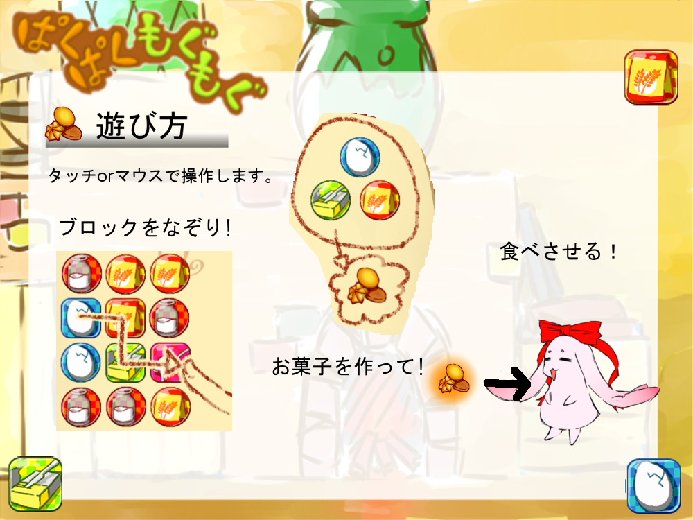
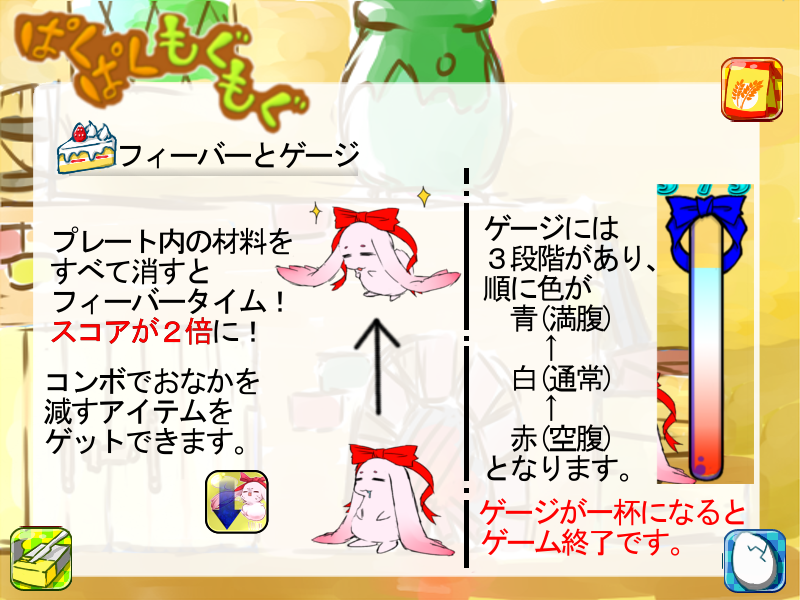

Gallery
このページでは、私がこれまでに制作した作品を紹介します。ぱくぱくもぐもぐ
【完成日2013.06.28 制作期間60日】
 or
PC版ダウンロード
or
PC版ダウンロード
QRコード（スマホプレイ用）
サンプルイメージ
 
作品説明
お腹を空かせたジョセフィに、お菓子を食べさせてあげるパズルゲームです。
色々な注文をしてくるジョセフィに、どんどんお菓子を食べさせましょう！
あなたは、どれだけジョセフィを満足させられる？
何を工夫したか
ブロックが揃わなくなることがないように、シャッフルの仕方を工夫しました。
ゲージの状態がわかりやすいように、ゲージ本体に変化をつけました。
ゲームがレベルアップしていくと、材料が増え、お菓子の種類も増えるようにしました。
どこを見て欲しいか
ジョセフィのアニメーション
ブロックのエフェクト。
指を離した時の動作。
| 開発環境 | C++ |
|---|---|
| 使用ツール | wizapply |